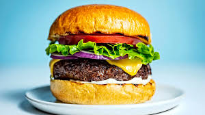

Hamburgers
Home

Description
The best Oklahoma onion style burger. Thinly sliced onions smashed into
beautiful beef and cooked to perfection. Classic lettuce and tomato combo.
- 80/20 Grassfed Beef (has to be grassfed. Best flavor)
- Brioche buns
- Lettuce
- Tomato
- Mandoline sliced onions
- American cheese (hamburgers have to be made with American Cheese)
- Mustard and Ketchup if you want
- Season beef. Roll into quarter pound balls. Set aside to warm up to room temp
- use a Mandolineto slice your onions ultra thin. Like, paper thin if you can.
- Prep other veggies. Lettuce and tomato.
- Pre heat your cast iron skillet. Super hot.
- Put beef ball in skillet. Smash it down with whatever you use. Smash it thin
- Flip patty only once you start to see liquid bubbling through the whole patty.
This creates a beaufiul crust. 3 minutes or so should do it.
- After you flip the patty, add cheese.
- Scrape the beef from the pan. Build your burger.